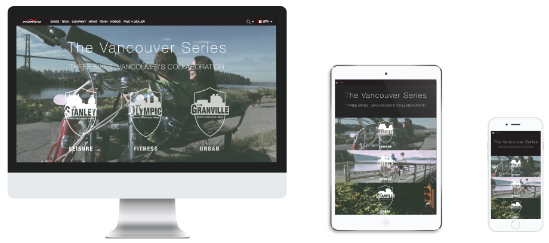
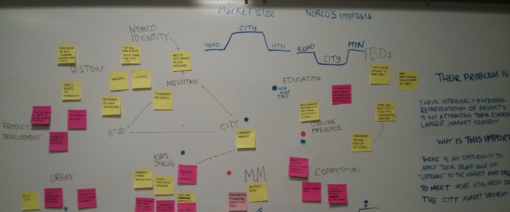
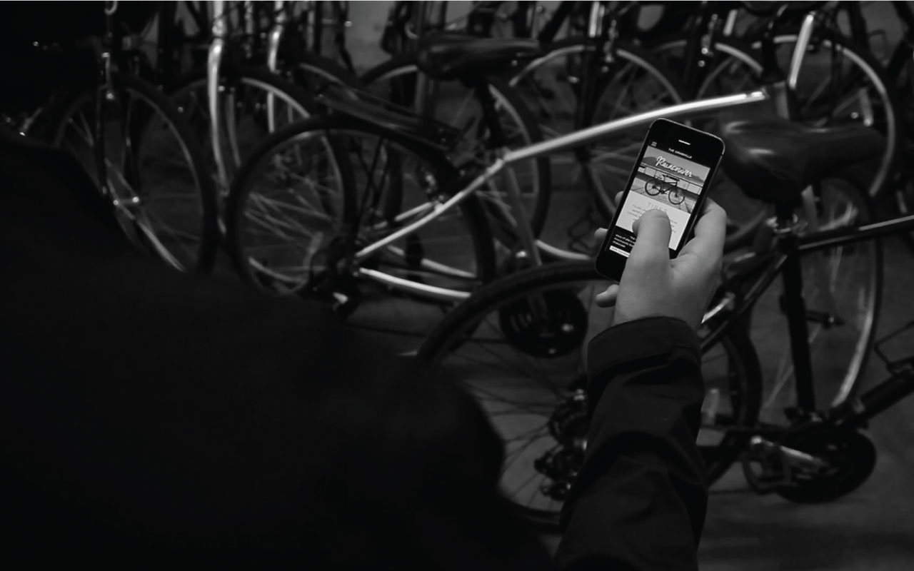

A web platform paired with an in-store interface specifically for Norco’s city bike segment. It simplifies the process of buying a bike and strengthen the relationship between Norco, independent bike dealer, and customers by forming a collaborative environment for the creation and enjoyment of bikes specific to their city.

Role:
UI/UX Design
Motion Graphic
Photography
Video Editing/Cinematography
Tools:
Illustrator
Premiere Pro
After Effects
Axure
Photoshop
Team:
Robyn Goodridge
Alex Honeywell
Venus Wan
Chris Elawa
Sean Leach
Nadhirah Shukri

Understanding context + domain
Based on our research on the bike industry in Vancouver, Norco’s business, and Norco’s customers’ current experience, we identified three main issues between Norco and their customers , which were lack of engagement with customers, customers’ needs were unfulfilled, and knowledge gap between average city biker and expert dealer.
Brainstorming ideas
One of our initial goal was to build and strengthen the community of Norco city bikers by creating a bike wayfinding mobile app. After re-evaluating this idea, we realized that it does not address the real needs of Norco city riders and decided to take a step back and reanalyze the customer’s needs and experience.
Our main goal is to minimize the knowledge gap between an average biker and IBD (Independent Bike Dealers), by creating a responsive website that would allow customers to explore not only the different types of city bikes, but also learn how each part of the bike meets their riding needs via computer, tablet, or mobile phone. Each bike part is presented in context with micro-stories to make the information more memorable for customers.

When customers are in-store, they can view the website on their phone or the in-store tablet and read riding stories shared by other Norco riders to reaffirm their purchase decision. Later, these customers can share their stories to riders via Twitter.
Desktop wireframe of a bike information page. We implemented parallax scrolling where the bike is fixed in the middle to create the experience of riding the bike in different environments. In each environment, customers can learn information about specific bike parts.